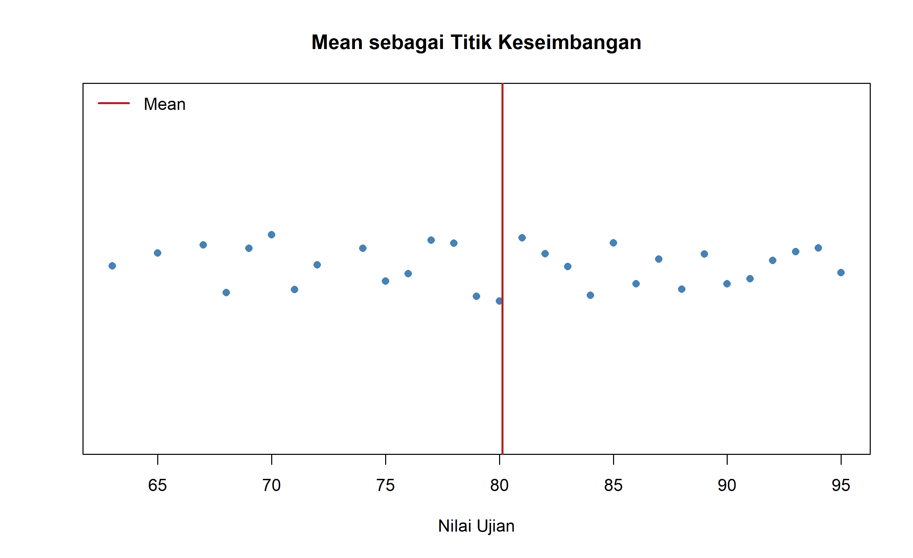
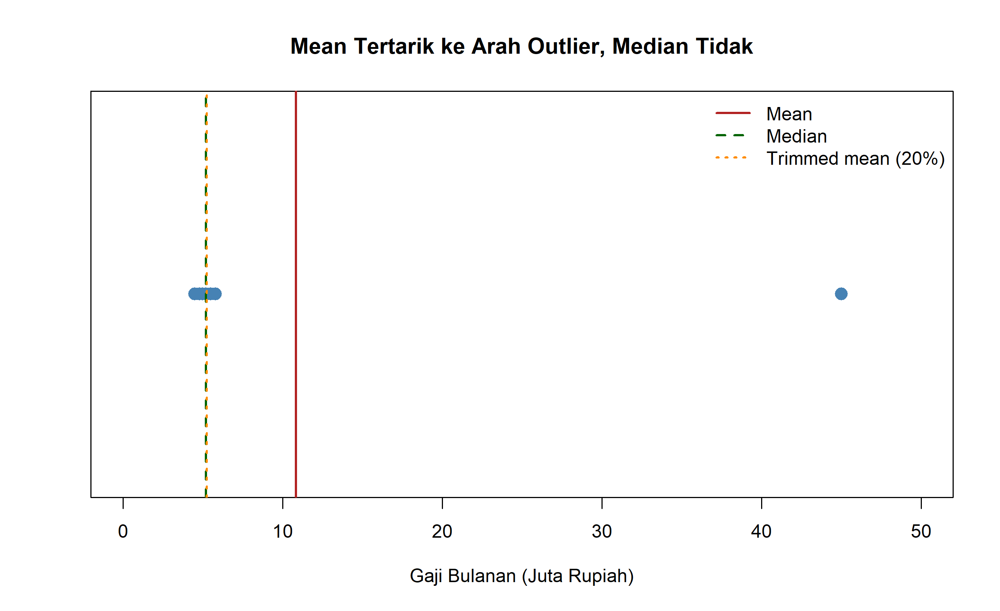
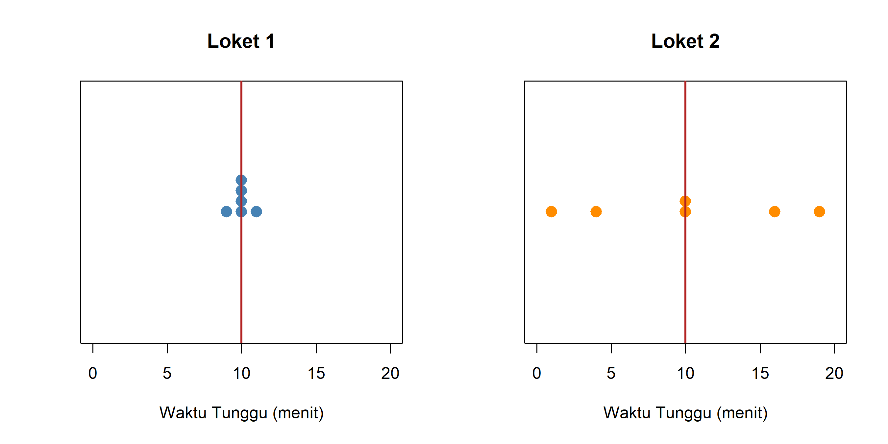
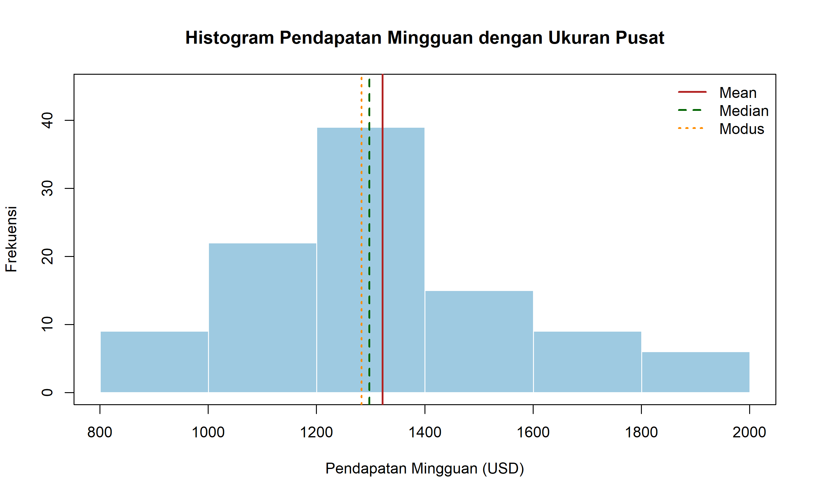
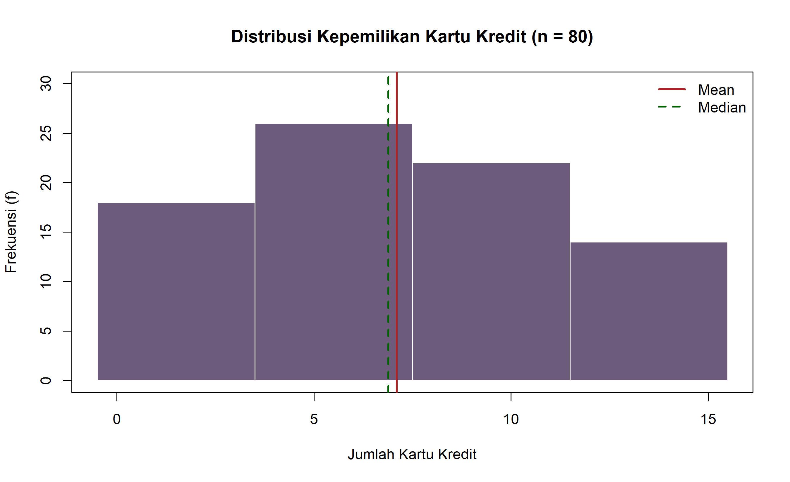

5.1.1 Skala Pengukuran Menentukan Ukuran yang Valid
Ingat kembali skala pengukuran dari Pertemuan 2. Skala data menentukan ukuran mana yang bermakna untuk dihitung:
Skala
Modus
Median
Mean
Ukuran Penyebaran
Nominal
Ya
Tidak
Tidak
Tidak berlaku
Ordinal
Ya
Ya
Kurang tepat
Kuartil / IQR
Interval
Ya
Ya
Ya
Rentang, IQR, varians, simpangan baku
Rasio
Ya
Ya
Ya
Semua ukuran, termasuk koefisien variasi
Contoh: “rata-rata golongan darah” tidak bermakna (nominal), sedangkan “rata-rata tinggi badan” bermakna (rasio).
5.1.2 Populasi vs Sampel: Notasi
Karena statistik dari sampel dipakai untuk menduga parameter populasi, notasinya dibedakan:
Ukuran
Populasi (Parameter)
Sampel (Statistik)
Banyaknya data
\(N\)
\(n\)
Rata-rata
\(\mu\)
\(\bar{x}\)
Varians
\(\sigma^2\)
\(s^2\)
Simpangan baku
\(\sigma\)
\(s\)
Simbol \(\sum\) (sigma besar) berarti “jumlahkan”: \(\sum_{i=1}^{n} x_i = x_1 + x_2 + \cdots + x_n\).
5.1.3 Data Utama yang Dipakai
Sepanjang praktikum, kita memakai nilai ujian Statistika 30 mahasiswa dari Pertemuan 4. Pengelompokan kelasnya (Aturan Sturges: 6 kelas, lebar 6, batas nyata dimulai dari 62,5) sudah kita peroleh dan dipakai ulang pada bagian data terkelompok.
Dari histogram, kita bisa memperkirakan “pusat” data ada di sekitar 80 dan sebarannya kira-kira dari 63 sampai 95. Praktikum ini mengubah perkiraan visual tersebut menjadi angka yang tepat.
5.2 Ukuran Pemusatan Data
5.2.1 Rata-rata Hitung (Mean)
Mean adalah jumlah seluruh nilai dibagi banyaknya data:
# Manual: jumlahkan lalu bagi nsum(nilai_ujian) / n
[1] 80.13333
# Fungsi bawaan Rmean(nilai_ujian)
[1] 80.13333
Sifat penting mean:
Memakai seluruh nilai data.
Jumlah selisih (deviasi) semua data terhadap mean selalu nol: \(\sum (x_i - \bar{x}) = 0\). Karena itu mean disebut titik keseimbangan data.
Sensitif terhadap outlier – satu nilai ekstrem dapat menggeser mean secara drastis.
round(sum(nilai_ujian -mean(nilai_ujian)), 10) # selalu 0
[1] 0
stripchart(nilai_ujian, method ="jitter", pch =16, col ="steelblue",xlab ="Nilai Ujian", main ="Mean sebagai Titik Keseimbangan")abline(v =mean(nilai_ujian), col ="firebrick", lwd =2)legend("topleft", legend ="Mean", col ="firebrick", lwd =2, bty ="n")

Rata-rata Tertimbang (Weighted Mean)
Jika setiap nilai memiliki bobot yang berbeda, gunakan rata-rata tertimbang:
mean(nilai_mutu) # rata-rata biasa (mengabaikan bobot SKS)
[1] 3.125
weighted.mean(nilai_mutu, w = sks) # IPK sebenarnya
[1] 3.208333
Rata-rata biasa (3,125) mengabaikan fakta bahwa Kalkulus (4 SKS) lebih “berat” daripada Algoritma (2 SKS). IPK yang benar adalah rata-rata tertimbang, yaitu 3.208.
5.2.2 Median
Median adalah nilai tengah setelah data diurutkan. Median membagi data menjadi dua bagian sama banyak: 50% data berada di bawahnya dan 50% di atasnya.
Jika \(n\) ganjil: median = data ke-\(\dfrac{n+1}{2}\).
Jika \(n\) genap: median = rata-rata data ke-\(\dfrac{n}{2}\) dan ke-\(\left(\dfrac{n}{2}+1\right)\).
# n = 30 (genap): rata-rata data ke-15 dan ke-16urut <-sort(nilai_ujian)urut[c(15, 16)]
[1] 80 81
mean(urut[c(15, 16)])
[1] 80.5
median(nilai_ujian)
[1] 80.5
Sekarang perhatikan data yang berbeda: gaji bulanan 7 karyawan sebuah perusahaan rintisan (juta rupiah), di mana salah satunya adalah pendiri perusahaan.
gaji <-c(4.5, 4.8, 5.0, 5.2, 5.5, 5.8, 45)# n = 7 (ganjil): median = data ke-4sort(gaji)[4]
[1] 5.2
median(gaji)
[1] 5.2
mean(gaji)
[1] 10.82857
Mean (10,83 juta) jauh lebih besar dari gaji enam dari tujuh karyawan, karena tertarik oleh satu nilai ekstrem (45 juta). Median (5,2 juta) tidak terpengaruh besarnya nilai ekstrem tersebut – median hanya peduli pada urutan, bukan besar nilainya. Inilah sebabnya median disebut ukuran yang tahan (robust) terhadap outlier.
Trimmed Mean: Jalan Tengah
Trimmed mean membuang sebagian persentase data terkecil dan terbesar sebelum menghitung rata-rata, sehingga tetap memakai banyak data tetapi lebih tahan terhadap outlier.
mean(gaji) # mean biasa
[1] 10.82857
mean(gaji, trim =0.2) # buang 20% terkecil & 20% terbesar (1 data tiap ujung)
[1] 5.26
median(gaji) # trimmed mean ekstrem (trim = 0.5)
[1] 5.2
5.2.3 Modus
Modus adalah nilai yang paling sering muncul. Berbeda dengan mean dan median, modus juga valid untuk data nominal. R tidak menyediakan fungsi bawaan untuk modus statistik (fungsi mode() di R menunjukkan tipe data, bukan modus), sehingga kita membuatnya sendiri:
hitung_modus <-function(x) { tabel <-table(x) maks <-max(tabel)if (maks ==1) return(NA) # semua nilai unik -> tidak ada modus hasil <-names(tabel)[tabel == maks] # bisa lebih dari satu modusif (is.numeric(x)) as.numeric(hasil) else hasil}hitung_modus(c(2, 3, 3, 4, 4, 4, 5)) # satu modus (unimodal)
[1] 4
hitung_modus(c(1, 2, 2, 3, 3, 4)) # dua modus (bimodal)
[1] 2 3
hitung_modus(nilai_ujian) # tidak ada modus (semua nilai unik)
[1] NA
# Modus pada data nominalmetode_bayar <-c("Tunai", "Debit", "Debit", "E-Wallet", "Debit", "Kredit", "Tunai")hitung_modus(metode_bayar)
[1] "Debit"
Catatan: untuk data kontinu (seperti nilai ujian di atas) yang hampir tidak pernah berulang persis, modus dari data mentah tidak informatif. Solusinya adalah mencari kelas modus dari data yang sudah dikelompokkan (dibahas pada bagian Data Terkelompok).
5.2.4 Membandingkan dan Memilih Ukuran Pemusatan
Ukuran
Kelebihan
Kelemahan
Paling cocok untuk
Mean
Memakai semua data; dasar bagi banyak metode statistik lanjutan
Sensitif terhadap outlier dan data menceng
Data numerik simetris tanpa outlier
Median
Tahan terhadap outlier; selalu ada
Tidak memakai besar nilai semua data
Data numerik menceng (misalnya pendapatan, harga rumah), atau data ordinal
Modus
Bisa untuk data nominal; mudah dipahami
Bisa tidak ada atau lebih dari satu
Data nominal/kategorik; mencari nilai terpopuler
stripchart(gaji, method ="stack", pch =16, cex =1.6, col ="steelblue",xlim =c(0, 50), xlab ="Gaji Bulanan (Juta Rupiah)",main ="Mean Tertarik ke Arah Outlier, Median Tidak")abline(v =mean(gaji), col ="firebrick", lwd =2)abline(v =median(gaji), col ="darkgreen", lwd =2, lty =2)abline(v =mean(gaji, trim =0.2), col ="darkorange", lwd =2, lty =3)legend("topright", bty ="n", lwd =2, lty =c(1, 2, 3),col =c("firebrick", "darkgreen", "darkorange"),legend =c("Mean", "Median", "Trimmed mean (20%)"))

Panduan memilih:
Data nominal -> gunakan modus.
Data ordinal -> gunakan median (dan modus).
Data numerik simetris, tanpa outlier -> mean.
Data numerik menceng atau mengandung outlier -> median (laporkan mean sebagai pelengkap jika perlu).
5.3 Catatan: Median sebagai Ukuran Letak
Median membagi data terurut menjadi dua bagian sama banyak. Gagasan yang sama dapat diperluas menjadi kuartil (empat bagian), desil (sepuluh bagian), dan persentil (seratus bagian), beserta rentang antarkuartil (IQR) sebagai ukuran sebaran yang tahan nilai ekstrem. Semua ukuran letak tersebut dibahas lengkap pada Pertemuan 6. Untuk saat ini, cukup diingat bahwa median adalah persentil ke-50.
5.4 Ukuran Penyebaran Data
5.4.1 Mengapa Ukuran Pusat Saja Tidak Cukup?
Dua loket pelayanan mencatat waktu tunggu (menit) enam pelanggan. Keduanya memiliki mean dan median yang persis sama:
par(mfrow =c(1, 2))stripchart(loket_1, method ="stack", pch =16, cex =1.6, col ="steelblue",xlim =c(0, 20), xlab ="Waktu Tunggu (menit)", main ="Loket 1")abline(v =10, col ="firebrick", lwd =2)stripchart(loket_2, method ="stack", pch =16, cex =1.6, col ="darkorange",xlim =c(0, 20), xlab ="Waktu Tunggu (menit)", main ="Loket 2")abline(v =10, col ="firebrick", lwd =2)

par(mfrow =c(1, 1))
Kedua loket “rata-rata 10 menit”, tetapi pengalaman pelanggannya sangat berbeda: Loket 1 konsisten, Loket 2 tidak dapat diprediksi (ada yang hanya menunggu 1 menit, ada yang 19 menit). Perbedaan inilah yang ditangkap oleh ukuran penyebaran.
5.4.2 Rentang (Range)
\[\text{Rentang} = x_{\max} - x_{\min}\]
range(nilai_ujian) # R mengembalikan nilai min dan max, BUKAN selisihnya
[1] 63 95
diff(range(nilai_ujian)) # rentang sebenarnya
[1] 32
diff(range(loket_1))
[1] 2
diff(range(loket_2))
[1] 18
Rentang mudah dihitung, tetapi hanya memakai dua nilai (terkecil dan terbesar) sehingga sangat dipengaruhi nilai ekstrem dan mengabaikan sebaran data di antaranya. Ukuran sebaran yang memakai seluruh data adalah varians dan simpangan baku.
5.4.3 Deviasi, Varians, dan Simpangan Baku
Untuk mengukur “rata-rata jarak data dari meannya”, langkah pertama yang terpikir adalah merata-ratakan deviasi \((x_i - \bar{x})\). Namun sudah kita lihat bahwa jumlah deviasi selalu nol (yang positif dan negatif saling meniadakan), sehingga tidak informatif. Ada dua jalan keluar: memakai nilai mutlak (menghasilkan mean absolute deviation) atau mengkuadratkan deviasi (menghasilkan varians). Cara kedua lebih umum karena sifat matematisnya yang baik.
Jadi \(s^2 = \dfrac{18}{7} \approx 2{,}571\) dan \(s = \sqrt{2{,}571} \approx 1{,}604\). Secara sederhana, skor kuis rata-rata menyimpang sekitar 1,6 poin dari meannya.
Awas: fungsi var() dan sd() di R selalu membagi dengan \(n-1\) (versi sampel). Jika data Anda adalah seluruh populasi, gunakan mean((x - mean(x))^2) untuk varians populasi.
Mengapa Dibagi \(n - 1\)?
Deviasi dihitung terhadap \(\bar{x}\) (bukan \(\mu\) yang sebenarnya), dan \(\bar{x}\) selalu “menyesuaikan diri” dengan sampel sehingga jumlah kuadrat deviasinya cenderung terlalu kecil. Pembagian dengan \(n-1\) (disebut koreksi Bessel, terkait derajat bebas) mengoreksi bias tersebut. Simulasi berikut membuktikannya:
set.seed(2026)populasi <-rnorm(10000, mean =50, sd =10)sigma2 <-mean((populasi -mean(populasi))^2) # varians populasi sebenarnya# Ambil 5000 sampel berukuran n = 5, hitung varians dengan dua carahasil <-replicate(5000, { s <-sample(populasi, 5)c(bagi_n =sum((s -mean(s))^2) /5, bagi_n_min_1 =var(s))})kable(data.frame(Metode =c("Varians populasi sebenarnya", "Rata-rata s^2 dibagi n", "Rata-rata s^2 dibagi n - 1"),Nilai =round(unname(c(sigma2, rowMeans(hasil))), 2)), caption ="Rata-rata dari 5000 varians sampel (n = 5)")
Rata-rata dari 5000 varians sampel (n = 5)
Metode
Nilai
Varians populasi sebenarnya
100.28
Rata-rata s^2 dibagi n
79.45
Rata-rata s^2 dibagi n - 1
99.31
Pembagian dengan \(n\) rata-rata menduga terlalu rendah (sekitar 80% dari nilai sebenarnya untuk \(n = 5\)), sedangkan pembagian dengan \(n-1\) rata-rata tepat mendekati varians populasi sebenarnya. Inilah sebab \(n-1\) dipakai untuk sampel.
Menerapkan pada Data Nilai Ujian
c(Varians =var(nilai_ujian), SD =sd(nilai_ujian))
Varians SD
87.016092 9.328242
Simpangan baku nilai ujian sekitar 9.33 poin: secara umum, nilai seorang mahasiswa menyimpang sekitar 9.3 poin dari rata-rata kelas (80.1).
5.4.4 Koefisien Variasi (CV)
Simpangan baku bergantung pada satuan dan besar data, sehingga tidak adil untuk membandingkan variabilitas dua variabel yang skalanya berbeda. Koefisien variasi menyatakan simpangan baku relatif terhadap meannya:
\[CV = \frac{s}{\bar{x}} \times 100\%\]
Contoh: manakah yang lebih bervariasi, tinggi badan atau berat badan mahasiswa?
tinggi <-c(mean =165, sd =8) # cmberat <-c(mean =60, sd =9) # kgcv <-function(rata, simpangan) simpangan / rata *100c(CV_Tinggi_persen =cv(tinggi[["mean"]], tinggi[["sd"]]),CV_Berat_persen =cv(berat[["mean"]], berat[["sd"]]))
Simpangan baku berat badan (9 kg) memang hanya sedikit lebih besar daripada tinggi badan (8 cm), tetapi dalam kaitannya dengan meannya, berat badan jauh lebih bervariatif (CV sekitar 15% vs 4,8%). Perbandingan SD langsung antara “cm” dan “kg” tidak bermakna; CV tidak memiliki satuan sehingga dapat dibandingkan.
Syarat CV: hanya valid untuk data skala rasio (nol mutlak) dengan mean positif dan tidak mendekati nol. Jangan gunakan CV untuk suhu dalam °C (skala interval).
5.4.5 Ringkasan Ukuran Penyebaran
Ukuran
Rumus
Satuan
Tahan Outlier?
Berpasangan dengan
Rentang
\(x_{\max} - x_{\min}\)
Sama dengan data
Tidak
(Min, Maks)
Varians
\(\dfrac{\sum (x_i - \bar{x})^2}{n - 1}\)
Kuadrat satuan data
Tidak
Mean
Simpangan baku
\(\sqrt{s^2}\)
Sama dengan data
Tidak
Mean
Koefisien variasi
\(\dfrac{s}{\bar{x}} \times 100\%\)
Tanpa satuan (%)
Tidak
Membandingkan variabilitas relatif
Kaidah pasangan: mean dilaporkan bersama simpangan baku; median dilaporkan bersama rentang atau – setelah Pertemuan 6 – bersama IQR (kuartil).
5.5 Interpretasi: Bentuk Distribusi dari Pusat dan Sebaran
Posisi relatif mean, median, dan modus mengungkap bentuk distribusi:
Bentuk
Ciri
Hubungan Mean–Median–Modus
Simetris
Sisi kiri dan kanan saling mencerminkan
Mean \(\approx\) Median \(\approx\) Modus
Menjulur kanan (skewed right)
Ekor panjang ke arah nilai besar
Mean \(>\) Median \(>\) Modus
Menjulur kiri (skewed left)
Ekor panjang ke arah nilai kecil
Mean \(<\) Median \(<\) Modus
Bimodal
Dua puncak berbeda (kemungkinan dua sub-populasi)
Satu ukuran pusat tidak cukup mewakili data
Mean paling “tertarik” ke arah ekor, sedangkan median lebih bertahan. Karena itu selisih mean dan median dapat dijadikan petunjuk kemencengan. Salah satu ukuran yang membakukannya adalah koefisien kemencengan Pearson:
\[Sk = \frac{3(\bar{x} - \text{Median})}{s}\]
Aturan praktis: \(Sk > 0\) menjulur kanan, \(Sk < 0\) menjulur kiri, dan \(|Sk|\) yang kecil (kurang dari sekitar 0,5) dianggap hampir simetris.
ringkas_bentuk <-function(x) {c(Mean =mean(x), Median =median(x), SD =sd(x),Kemencengan_Pearson =3* (mean(x) -median(x)) /sd(x))}kable(round(t(sapply(list(Simetris = data_simetris, Menjulur_Kanan = data_skewed_kanan,Menjulur_Kiri = data_skewed_kiri, Bimodal = data_bimodal), ringkas_bentuk)), 2),caption ="Ukuran Pusat dan Kemencengan pada Empat Bentuk Distribusi")
Ukuran Pusat dan Kemencengan pada Empat Bentuk Distribusi
Mean
Median
SD
Kemencengan_Pearson
Simetris
50.16
50.09
9.92
0.02
Menjulur_Kanan
20.63
18.50
12.32
0.52
Menjulur_Kiri
80.24
82.07
11.59
-0.47
Bimodal
49.91
50.26
20.53
-0.05
Interpretasi:
Simetris: mean dan median hampir sama; \(Sk \approx 0\).
Menjulur kanan: mean lebih besar dari median (ekor panjang di sisi nilai besar menarik mean); \(Sk > 0\).
Menjulur kiri: mean lebih kecil dari median; \(Sk < 0\).
Bimodal: mean dan median jatuh di antara dua puncak – di wilayah yang hampir tidak ada datanya. Pada kasus ini, melaporkan “rata-rata” saja menyesatkan; sebaiknya pisahkan data menjadi dua kelompok atau laporkan kedua puncaknya.
Latihan reflektif: Bagaimana bentuk distribusi nilai ujian Statistika (nilai_ujian)? Jawab dengan membandingkan mean dan median-nya:
c(Mean =mean(nilai_ujian), Median =median(nilai_ujian),Kemencengan_Pearson =3* (mean(nilai_ujian) -median(nilai_ujian)) /sd(nilai_ujian))
Mean Median Kemencengan_Pearson
80.1333333 80.5000000 -0.1179215
Jawaban: mean (80.13) dan median (80.5) hampir sama dan \(Sk\) mendekati nol, sehingga distribusinya relatif simetris – konsisten dengan bentuk histogram pada awal praktikum.
5.6 Interpretasi: Pengaruh Nilai Ekstrem
Kita sudah melihat pada data gaji bahwa satu nilai ekstrem dapat menarik mean jauh dari “kebanyakan” data. Bagaimana dengan ukuran penyebaran?
5.6.1 Ukuran Mana yang Tahan Nilai Ekstrem?
Bandingkan seluruh ukuran pada data gaji dengan dan tanpa outlier:
ukuran <-function(x) {c(Mean =mean(x), Median =median(x), SD =sd(x),Rentang =diff(range(x)), CV_persen =sd(x) /mean(x) *100)}gaji_tanpa_outlier <- gaji[gaji !=max(gaji)]kable(round(rbind("Dengan outlier"=ukuran(gaji),"Tanpa outlier"=ukuran(gaji_tanpa_outlier)), 2),caption ="Pengaruh Satu Nilai Ekstrem terhadap Ukuran Pusat dan Sebaran")
Pengaruh Satu Nilai Ekstrem terhadap Ukuran Pusat dan Sebaran
Mean
Median
SD
Rentang
CV_persen
Dengan outlier
10.83
5.2
15.07
40.5
139.21
Tanpa outlier
5.13
5.1
0.47
1.3
9.19
Satu data ekstrem mengubah mean, SD, rentang, dan CV secara dramatis, sedangkan median hampir tidak berubah. Ringkasnya:
Tidak tahan outlier
Tahan outlier (robust)
Ukuran pusat
Mean
Median, trimmed mean
Ukuran sebaran
Rentang, varians, simpangan baku, CV
IQR (Pertemuan 6)
Cara mendeteksi outlier secara formal (pagar IQR, boxplot, modified z-score) dibahas pada Pertemuan 6. Satu prinsip yang perlu dipegang sejak sekarang – jangan menghapus nilai ekstrem secara otomatis. Selidiki dahulu penyebabnya: (1) kesalahan input/pengukuran -> perbaiki atau hapus; (2) nilai ekstrem yang sah (seperti gaji pendiri perusahaan) -> pertahankan, dan gunakan ukuran yang robust; (3) berasal dari populasi yang berbeda -> analisis terpisah. Selalu laporkan keputusan Anda.
5.7 Interpretasi: Menafsirkan Simpangan Baku
5.7.1 Z-Score
Z-score menyatakan berapa simpangan baku sebuah nilai berada di atas (+) atau di bawah (-) mean:
\[z = \frac{x - \bar{x}}{s}\]
Karena tanpa satuan, z-score memungkinkan membandingkan nilai dari skala yang berbeda.
round(c(Mean_z =mean(z_ujian), SD_z =sd(z_ujian)), 10) # z-score selalu bermean 0 dan SD 1
Mean_z SD_z
0 1
Contoh perbandingan: Andi mendapat 85 pada Statistika (mean kelas 80, SD 5) dan 78 pada Kalkulus (mean kelas 65, SD 10). Di mata pelajaran mana prestasi relatifnya lebih baik?
Meskipun nilai mentah Statistika lebih tinggi, prestasi relatif Andi lebih baik di Kalkulus (1,3 SD di atas rata-rata kelas, dibanding 1,0 SD pada Statistika).
Nilai dengan \(|z|\) yang sangat besar berada jauh dari pusat data. Kapan nilai seperti itu layak disebut outlier – dan mengapa aturan “\(|z| > 3\)” punya kelemahan – dibahas pada Pertemuan 6.
5.7.2 Aturan Empiris (68-95-99.7)
Untuk data yang berbentuk lonceng dan simetris (mendekati distribusi normal):
Rentang
Proporsi data
\(\bar{x} \pm 1s\)
sekitar 68%
\(\bar{x} \pm 2s\)
sekitar 95%
\(\bar{x} \pm 3s\)
sekitar 99,7%
5.7.3 Teorema Chebyshev
Untuk sembarang bentuk distribusi (termasuk yang menceng atau bimodal), minimal proporsi data dalam \(k\) simpangan baku dari mean (\(k > 1\)) adalah:
\[\text{Proporsi} \geq 1 - \frac{1}{k^2}\]
Chebyshev berlaku umum, tetapi batasnya lebih longgar dibanding aturan empiris.
proporsi_dalam <-function(x, k) mean(abs(x -mean(x)) <= k *sd(x))k <-c(1, 2, 3)kable(data.frame(k = k,Data_Nilai_Ujian_pct =round(sapply(k, function(kk) proporsi_dalam(nilai_ujian, kk)) *100, 1),Aturan_Empiris_pct =c(68, 95, 99.7),Chebyshev_Minimal_pct =round((1-1/ k^2) *100, 1)), caption ="Persentase Data dalam k Simpangan Baku dari Mean")
Persentase Data dalam k Simpangan Baku dari Mean
k
Data_Nilai_Ujian_pct
Aturan_Empiris_pct
Chebyshev_Minimal_pct
1
60
68.0
0.0
2
100
95.0
75.0
3
100
99.7
88.9
Data nilai ujian (bentuk relatif simetris, tetapi \(n\) hanya 30) cukup mendekati aturan empiris dan selalu memenuhi batas minimal Chebyshev. Untuk \(k = 1\), Chebyshev tidak memberikan informasi (\(1 - 1/1^2 = 0\%\)). Aturan empiris tidak boleh dipakai pada data yang sangat menceng atau bimodal; gunakan Chebyshev.
5.8 Statistik dari Data Terkelompok
Pada laporan atau publikasi, data sering hanya tersedia dalam bentuk tabel distribusi frekuensi, sehingga nilai aslinya tidak diketahui. Ukuran pemusatan dan penyebaran tetap dapat diaproksimasi dengan menganggap setiap data dalam suatu kelas bernilai sama dengan titik tengah kelas (\(m\)).
5.8.1 Rumus Data Terkelompok
Dengan \(f\) = frekuensi kelas, \(m\) = titik tengah, \(n = \sum f\), \(w\) = lebar kelas:
Ukuran
Rumus
Mean
\(\bar{x} = \dfrac{\sum f \cdot m}{n}\)
Median
\(\text{Median} = L + \left(\dfrac{\frac{n}{2} - F}{f_{med}}\right) w\)
Modus
\(\text{Modus} = L + \left(\dfrac{d_1}{d_1 + d_2}\right) w\)
Varians
\(s^2 = \dfrac{\sum f \cdot (m - \bar{x})^2}{n - 1}\)
Simpangan baku
\(s = \sqrt{s^2}\)
Keterangan:
Median:\(L\) = batas nyata bawah kelas median (kelas pertama yang frekuensi kumulatifnya mencapai \(\frac{n}{2}\)); \(F\) = frekuensi kumulatif sebelum kelas median; \(f_{med}\) = frekuensi kelas median.
Modus:\(L\) = batas nyata bawah kelas modus (kelas dengan frekuensi terbesar); \(d_1\) = selisih frekuensi kelas modus dengan kelas sebelumnya; \(d_2\) = selisih dengan kelas sesudahnya.
5.8.2 Studi Kasus: Pendapatan Mingguan 100 Karyawan
Data: pendapatan mingguan (USD) dari 100 karyawan, dikelompokkan ke dalam 6 kelas (data yang sama dengan Pertemuan 4).
Kelas median adalah 1201–1400 karena frekuensi kumulatifnya (70) pertama kali melampaui 50. Dengan \(L = 1200{,}5\), \(F = 31\), \(f_{med} = 39\), dan \(w = 200\):
Data ini diperlakukan sebagai sampel sehingga pembaginya \(n - 1 = 99\).
Fungsi Bantu Gabungan
Karena langkah-langkah di atas akan dipakai berulang, kita bungkus dalam satu fungsi yang menerima batas nyata dan frekuensi:
statistik_terkelompok <-function(batas_nyata, f) { k <-length(f); n <-sum(f) L <-head(batas_nyata, -1); U <-tail(batas_nyata, -1) w <- U - L; m <- (L + U) /2 rata <-sum(f * m) / n Fk <-cumsum(f) i_med <-which(Fk >= n /2)[1] F_sb <-if (i_med ==1) 0else Fk[i_med -1] med <- L[i_med] + ((n /2- F_sb) / f[i_med]) * w[i_med] i_mod <-which.max(f) d1 <- f[i_mod] - (if (i_mod ==1) 0else f[i_mod -1]) d2 <- f[i_mod] - (if (i_mod == k) 0else f[i_mod +1]) mod <- L[i_mod] + (d1 / (d1 + d2)) * w[i_mod] v <-sum(f * (m - rata)^2) / (n -1)c(n = n, Mean = rata, Median = med, Modus = mod,Varians = v, SD =sqrt(v), CV_persen =sqrt(v) / rata *100)}round(statistik_terkelompok(batas_nyata_p, f_p), 2)
n Mean Median Modus Varians SD CV_persen
100.00 1322.50 1297.94 1283.43 65369.70 255.67 19.33
Visualisasi dan Interpretasi
hasil_p <-statistik_terkelompok(batas_nyata_p, f_p)plot(NULL, xlim =range(batas_nyata_p), ylim =c(0, 45),xlab ="Pendapatan Mingguan (USD)", ylab ="Frekuensi",main ="Histogram Pendapatan Mingguan dengan Ukuran Pusat")rect(L_p, 0, U_p, f_p, col ="#9ecae1", border ="white")abline(v = hasil_p["Mean"], col ="firebrick", lwd =2)abline(v = hasil_p["Median"], col ="darkgreen", lwd =2, lty =2)abline(v = hasil_p["Modus"], col ="darkorange", lwd =2, lty =3)legend("topright", bty ="n", lwd =2, lty =1:3,col =c("firebrick", "darkgreen", "darkorange"),legend =c("Mean", "Median", "Modus"))

Interpretasi: Mean (1322.5) > Median (1297.9) > Modus (1283.4), pola khas distribusi yang menjulur ke kanan (sedikit karyawan berpendapatan tinggi menarik mean ke atas). Koefisien kemencengan Pearson-nya 0.29 (positif, agak menceng kanan). Simpangan baku sekitar 256 USD dengan CV 19.3%. Pendapatan “tipikal” sebaiknya dilaporkan dengan median (sekitar 1298 USD).
5.8.3 Seberapa Akurat Aproksimasi Data Terkelompok?
Kita punya data mentah nilai ujian sekaligus tabel kelompoknya, sehingga dapat membandingkan hasil eksak dan aproksimasi:
eksak <-c(Mean =mean(nilai_ujian), Median =median(nilai_ujian), SD =sd(nilai_ujian))aprox <-statistik_terkelompok(batas_nyata_u, f_ujian)[c("Mean", "Median", "SD")]kable(round(rbind("Data mentah (eksak)"= eksak,"Data terkelompok (aproksimasi)"= aprox), 2),caption ="Perbandingan Statistik Eksak vs Aproksimasi Data Terkelompok")
Perbandingan Statistik Eksak vs Aproksimasi Data Terkelompok
Mean
Median
SD
Data mentah (eksak)
80.13
80.5
9.33
Data terkelompok (aproksimasi)
80.30
80.5
9.42
Selisihnya kecil, tetapi tidak nol, karena pengelompokan membuang informasi nilai asli tiap data. Selalu gunakan data mentah jika tersedia; gunakan rumus data terkelompok hanya jika data mentah tidak ada.
5.9 Etika Pelaporan: Ketika Rata-rata Menyesatkan
Sama seperti grafik, ukuran statistik dapat menyesatkan – disengaja atau tidak – bila dipilih atau dilaporkan secara keliru.
5.9.1 Contoh 1: Rata-rata pada Data Menceng
“Rata-rata gaji di perusahaan kami mencapai 10,8 juta rupiah per bulan!” Kalimat ini benar secara perhitungan untuk data gaji, tetapi menyesatkan: enam dari tujuh karyawan bergaji di bawah 6 juta. Untuk data menceng atau beroutlier, laporkan median.
c(Mean =mean(gaji), Median =median(gaji))
Mean Median
10.82857 5.20000
sum(gaji <mean(gaji)) # banyaknya karyawan bergaji di bawah "rata-rata"
[1] 6
5.9.2 Contoh 2: Rata-rata dari Rata-rata
Kelas A (30 mahasiswa) memiliki rata-rata 80, dan Kelas B (10 mahasiswa) memiliki rata-rata 70. Berapa rata-rata gabungan?
rata <-c(A =80, B =70)ukuran_kelas <-c(A =30, B =10)mean(rata) # SALAH: mengabaikan ukuran kelas
[1] 75
weighted.mean(rata, w = ukuran_kelas) # BENAR: rata-rata tertimbang
[1] 77.5
Rata-rata sederhana (75) salah karena memperlakukan kedua kelas sama penting; rata-rata gabungan yang benar adalah 77,5 karena Kelas A memiliki lebih banyak mahasiswa.
5.9.3 Contoh 3: Rata-rata pada Data Bimodal
Pada data data_bimodal (bagian Bentuk Distribusi), mean sekitar 50, padahal hampir tidak ada data di sekitar nilai tersebut. Mean di sini “merata-ratakan” dua kelompok berbeda dan tidak mewakili siapa pun.
5.9.4 Contoh 4: Pusat Tanpa Sebaran
Pelaporan sederhana
Pelaporan lebih baik
“Rata-rata nilai ujian adalah 80.”
“Rata-rata nilai ujian 80.1 (SD 9.3; median 80.5; rentang 63–95; n = 30).”
Pelaporan yang lebih baik memungkinkan pembaca menilai apakah “rata-rata 80” mewakili kelas secara wajar atau tidak.
5.9.5 Daftar Periksa (Checklist) Pelaporan Statistik yang Jujur
5.10 Studi Kasus Komprehensif: Membandingkan Dua Kelas
Konteks: Dosen Statistika membandingkan nilai ujian dua kelas paralel, masing-masing 30 mahasiswa. Kelas A adalah data nilai_ujian yang sudah kita pakai. Kelas B dicatat berikut ini.
1. Kelas mana yang berprestasi lebih baik berdasarkan ukuran pusat?
Mean kedua kelas hampir identik (80.1 vs 80), sehingga berdasarkan mean saja keduanya “sama”. Namun median Kelas B (82) lebih tinggi daripada mean-nya (80), yang mengindikasikan distribusi menjulur kiri: mayoritas mahasiswa Kelas B bernilai relatif tinggi, tetapi ditarik turun oleh segelintir nilai rendah (54–61). Kelas A hampir simetris (mean \(\approx\) median).
2. Kelas mana yang lebih homogen?
Kelas A. Rentangnya lebih sempit (32 vs 46), simpangan bakunya lebih kecil (9.3 vs 14.4), dan CV-nya lebih rendah (11.6% vs 18%). Kelas B jauh lebih beragam: ada mahasiswa yang sangat unggul sekaligus yang tertinggal.
3. Mengapa nilai 90 tampak “lebih istimewa” di Kelas A?
Karena sebaran Kelas A lebih kecil, nilai 90 berada 1.06 SD di atas mean Kelas A, tetapi hanya 0.69 SD di atas mean Kelas B. Nilai yang sama menempati posisi relatif berbeda tergantung sebaran kelasnya.
4. Apa rekomendasi bagi dosen?
Kelas A cukup ditangani dengan pengajaran standar. Kelas B membutuhkan pendekatan berlapis: pendampingan tambahan bagi kelompok bernilai rendah, dan materi pengayaan bagi kelompok bernilai tinggi. Kesimpulan ini tidak akan terlihat bila hanya membandingkan mean.
5.11 Latihan Mandiri
5.11.1 Latihan Utama (Exercise 2.14 Lanjutan): Kepemilikan Kartu Kredit
Konteks: Sebuah sampel acak dari 80 orang dewasa ditanya mengenai jumlah kartu kredit yang mereka miliki. Data sudah disajikan dalam kelas (data terkelompok):
kelas_kk <-c("0 to 3", "4 to 7", "8 to 11", "12 or more")frekuensi_kk <-c(18, 26, 22, 14)# Kelas terbuka "12 or more" diasumsikan mengikuti lebar kelas yang sama# dengan kelas sebelumnya (w = 4), sehingga batas atasnya = 15.batas_bawah_kk <-c(0, 4, 8, 12)batas_atas_kk <-c(3, 7, 11, 15)batas_nyata_kk <-c(-0.5, 3.5, 7.5, 11.5, 15.5)
Tugas 1: Klasifikasi variabel dan pemilihan ukuran
Variabel yang diamati adalah jumlah kartu kredit yang dimiliki. Karena berupa hasil hitungan (bilangan bulat non-negatif) dengan nol mutlak, variabelnya kuantitatif diskrit berskala rasio. Dengan skala rasio, semua ukuran pemusatan dan penyebaran (termasuk koefisien variasi) valid untuk dihitung.
Tugas 2: Hitung titik tengah kelas (\(m\)) untuk interval “4 to 7”
m_4_7 <- (4+7) /2m_4_7
[1] 5.5
Titik tengah kelas “4 to 7” adalah 5.5, diperoleh dari \(\dfrac{4 + 7}{2}\) (sama dengan menggunakan batas nyata: \(\dfrac{3{,}5 + 7{,}5}{2}\)).
plot(NULL, xlim =c(-0.5, 15.5), ylim =c(0, 30),xlab ="Jumlah Kartu Kredit", ylab ="Frekuensi (f)",main ="Distribusi Kepemilikan Kartu Kredit (n = 80)")rect(head(batas_nyata_kk, -1), 0, tail(batas_nyata_kk, -1), frekuensi_kk,col ="#6C5B7B", border ="white")abline(v = hasil_kk["Mean"], col ="firebrick", lwd =2)abline(v = hasil_kk["Median"], col ="darkgreen", lwd =2, lty =2)legend("topright", legend =c("Mean", "Median"), col =c("firebrick", "darkgreen"),lwd =2, lty =c(1, 2), bty ="n")

Jawaban: Mean (7.1) sedikit di atas median (6.88) dan modus (6.17), dengan \(Sk =\) 0.16, sehingga distribusinya hampir simetris dengan sedikit kemencengan ke kanan. Rata-rata orang dalam sampel memiliki sekitar 7 kartu kredit. CV sebesar 57.8% menunjukkan variabilitas yang tinggi (simpangan baku mencapai lebih dari separuh mean-nya) – kepemilikan kartu kredit sangat beragam antarindividu.
Tugas 6 (Tantangan): Sensitivitas terhadap Kelas Terbuka
Bagaimana jika kelas “12 or more” ternyata mencakup orang dengan hingga 19 kartu (batas atas 19, bukan 15)?
batas_nyata_kk_alt <-c(-0.5, 3.5, 7.5, 11.5, 19.5) # batas atas kelas terakhir diperlebarsensitivitas <-rbind("Asumsi batas atas 15"=statistik_terkelompok(batas_nyata_kk, frekuensi_kk),"Asumsi batas atas 19"=statistik_terkelompok(batas_nyata_kk_alt, frekuensi_kk))kable(round(sensitivitas[, c("Mean", "Median", "Modus", "SD")], 2),caption ="Dampak Asumsi Kelas Terbuka")
Dampak Asumsi Kelas Terbuka
Mean
Median
Modus
SD
Asumsi batas atas 15
7.10
6.88
6.17
4.10
Asumsi batas atas 19
7.45
6.88
6.17
4.69
Jawaban: Median dan modus tidak berubah (keduanya berada di kelas “4 to 7”), tetapi mean dan simpangan baku meningkat karena titik tengah kelas terakhir bergeser. Ini contoh nyata bahwa median dan modus lebih tahan terhadap ketidakjelasan kelas terbuka dibanding mean. Karena itu, asumsi batas kelas terbuka harus selalu dinyatakan secara eksplisit.
5.11.2 Latihan Tambahan (Self-Check)
Kerjakan soal-soal berikut secara mandiri sebelum melihat kunci jawaban pada komentar kode.
Soal A. Data waktu tempuh (menit) 12 karyawan menuju kantor: 15, 22, 18, 30, 25, 20, 35, 28, 19, 24, 27, 33. Hitung mean, median, modus, rentang, varians, simpangan baku, dan koefisien variasi. Waktu tempuh berapa yang memiliki z-score terbesar?
# Kerjakan di sini:waktu <-c(15, 22, 18, 30, 25, 20, 35, 28, 19, 24, 27, 33)# ...# Kunci jawaban (jalankan setelah mencoba sendiri):# Mean = 24.67; Median = 24.5; Modus = tidak ada (semua nilai unik)# Rentang = 35 - 15 = 20# Varians = 38.24; SD = 6.18; CV = 6.18 / 24.67 x 100% = 25.07%# z-score terbesar (mutlak): 35 menit -> (35 - 24.67) / 6.18 = 1.67# (15 menit: z = -1.56). Semua data berada dalam 2 SD dari mean.
Soal B. Dua reksa dana memiliki statistik imbal hasil tahunan berikut: Reksa Dana X (mean 12%, SD 3%) dan Reksa Dana Y (mean 25%, SD 5%). Manakah yang risikonya (variabilitas) relatif lebih kecil?
# Kerjakan di sini:# cv_x <- ...# cv_y <- ...# Kunci jawaban:# CV_X = 3 / 12 x 100% = 25%# CV_Y = 5 / 25 x 100% = 20%# Reksa Dana Y lebih stabil secara relatif (CV lebih kecil), meskipun SD-nya (5%) lebih besar.
Soal C. Harga (miliar rupiah) 8 rumah di suatu perumahan: 0,85; 0,90; 0,95; 0,90; 1,05; 1,10; 0,98; 9,5. (a) Hitung mean, median, dan simpangan baku. (b) Hitung ulang ketiganya tanpa rumah termahal. (c) Ukuran pusat mana yang sebaiknya dilaporkan? Mengapa?
# Kerjakan di sini:harga <-c(0.85, 0.90, 0.95, 0.90, 1.05, 1.10, 0.98, 9.5)# ...# Kunci jawaban:# (a) Mean = 2.03; Median = 0.965; SD = 3.02# (b) Tanpa 9.5: Mean = 0.961; Median = 0.95; SD = 0.089# -> mean turun lebih dari separuh dan SD menyusut drastis; median nyaris tidak berubah.# (c) Laporkan MEDIAN (0.965 miliar), karena satu rumah mewah (9.5 miliar)# menggeser mean ke 2.03 miliar -- dua kali lipat harga hampir semua rumah lainnya.# Modus = 0.90 (muncul dua kali).
Soal D. Rina mendapat nilai 72 pada ujian yang mean-nya 65 dengan SD 5. Dewi mendapat nilai 80 pada ujian lain yang mean-nya 70 dengan SD 10. Siapa yang prestasi relatifnya lebih baik?
# Kerjakan di sini:# z_rina <- ...# z_dewi <- ...# Kunci jawaban:# z_Rina = (72 - 65) / 5 = 1.4# z_Dewi = (80 - 70) / 10 = 1.0# Rina lebih unggul secara relatif (1.4 SD di atas mean vs 1.0 SD), walaupun nilai mentah Dewi lebih tinggi.
5.12 Kesalahan Umum dalam Ukuran Pemusatan dan Penyebaran
Ringkasan kesalahan yang paling sering dijumpai, berdasarkan contoh-contoh pada praktikum ini:
Memakai mean untuk data menceng atau beroutlier tanpa memeriksa median – hasilnya tidak mewakili “kebanyakan” data (contoh: gaji, harga rumah).
Menghitung mean untuk data nominal atau ordinal – misalnya “rata-rata jenis kelamin” atau merata-ratakan peringkat kepuasan seolah jaraknya sama.
Lupa bahwa var() dan sd() di R memakai pembagi \(n-1\) – untuk data populasi, hasilnya sedikit berbeda dari \(\sigma^2\) dan \(\sigma\).
Menyangka range() di R mengembalikan selisih – fungsi itu mengembalikan nilai minimum dan maksimum; gunakan diff(range(x)).
Membandingkan simpangan baku antarvariabel berbeda skala (cm vs kg) tanpa koefisien variasi.
Menggunakan koefisien variasi pada skala interval (misalnya suhu °C) atau pada data dengan mean mendekati nol.
Merata-ratakan rata-rata tanpa bobot – rata-rata gabungan harus tertimbang menurut ukuran kelompok.
Melaporkan ukuran pusat tanpa ukuran sebaran (dan tanpa \(n\)) – pembaca tidak bisa menilai keterwakilan pusat data.
Menghapus outlier otomatis tanpa menyelidiki penyebabnya.
Menerapkan aturan empiris pada distribusi yang tidak berbentuk lonceng – gunakan Chebyshev untuk bentuk sembarang.
Menganggap hasil data terkelompok sebagai nilai eksak – itu hanya aproksimasi, dan hasilnya (terutama mean dan SD) sensitif terhadap asumsi kelas terbuka.
Mencari modus pada data kontinu mentah – nilai hampir tidak pernah berulang; kelompokkan dahulu dan gunakan kelas modus.
5.13 Cheat Sheet: Fungsi R yang Digunakan
Fungsi
Kegunaan
mean(x)
Rata-rata hitung; mean(x, trim = 0.1) untuk trimmed mean
weighted.mean(x, w)
Rata-rata tertimbang dengan bobot w
median(x)
Median
table(x)
Menghitung frekuensi tiap nilai (dasar mencari modus)
which.max(f)
Indeks nilai terbesar (mencari kelas modus)
summary(x)
Min, Q1, median, mean, Q3, maks
range(x)
Nilai minimum dan maksimum (bukan selisih)
diff(range(x))
Rentang
var(x)
Varians sampel (pembagi \(n-1\))
sd(x)
Simpangan baku sampel
scale(x)
Menghitung z-score
hist(x, breaks = ...)
Histogram
stripchart(x, method = ...)
Diagram titik untuk data kecil
abline(v = ...)
Menambahkan garis vertikal (mean, median, dst.) pada grafik
cumsum(x)
Frekuensi kumulatif (mencari kelas median)
cut(x, breaks = ...)
Mengelompokkan data numerik ke dalam kelas
sapply(list, fungsi)
Menerapkan fungsi ke beberapa dataset sekaligus
layout() / par(mfrow = ...)
Mengatur beberapa grafik dalam satu tampilan
kable(df)
Menampilkan data.frame sebagai tabel rapi (paket knitr)
5.14 Glosarium Istilah
Istilah
Definisi Singkat
Ukuran Pemusatan
Nilai tunggal yang menggambarkan “pusat” atau nilai tipikal data
Mean
Jumlah semua nilai dibagi banyaknya data
Rata-rata Tertimbang
Mean dengan bobot berbeda untuk tiap nilai
Trimmed Mean
Mean setelah membuang persentase tertentu data terkecil dan terbesar
Median
Nilai tengah data terurut; membagi data menjadi dua bagian sama banyak
Modus
Nilai yang paling sering muncul
Ukuran Penyebaran
Ukuran seberapa jauh data menyebar dari pusatnya
Rentang (Range)
Selisih nilai terbesar dan terkecil
Deviasi
Selisih sebuah nilai dengan mean: \(x_i - \bar{x}\)
Varians
Rata-rata kuadrat deviasi (pembagi \(n-1\) untuk sampel)
Simpangan Baku
Akar varians; ukuran sebaran dengan satuan sama seperti data
Koefisien Variasi (CV)
Simpangan baku relatif terhadap mean, dalam persen
Derajat Bebas
Banyaknya nilai yang bebas bervariasi; pada varians sampel sebesar \(n-1\)
Skewness (Kemencengan)
Ukuran ketidaksimetrisan suatu distribusi
Bimodal
Distribusi dengan dua puncak (modus) berbeda
Outlier
Data yang nilainya jauh menyimpang dari mayoritas data
Robust (Tahan)
Ukuran yang tidak banyak berubah oleh keberadaan outlier
Z-Score
Jarak sebuah nilai dari mean dalam satuan simpangan baku
Aturan Empiris
Aturan 68-95-99,7 untuk data berbentuk lonceng
Teorema Chebyshev
Batas minimal proporsi data dalam \(k\) simpangan baku, berlaku untuk sembarang distribusi
Titik Tengah Kelas (\(m\))
Nilai representatif kelas pada perhitungan data terkelompok
Kelas Median / Kelas Modus
Kelas yang memuat median / kelas dengan frekuensi terbesar
5.15 Rangkuman dan Kesimpulan
Pusat dan sebaran berpasangan. Ukuran pemusatan menjawab “di mana pusat data?”, ukuran penyebaran menjawab “seberapa menyebar?”. Melaporkan salah satunya saja tidak lengkap.
Skala data menentukan ukuran yang valid. Modus untuk nominal; median untuk ordinal; mean untuk interval/rasio; koefisien variasi khusus rasio.
Mean vs median. Mean memakai seluruh data tetapi sensitif terhadap outlier; median tahan outlier. Selisih keduanya menandakan kemencengan: mean > median (menjulur kanan), mean < median (menjulur kiri).
Varians dan simpangan baku mengukur rata-rata jarak data dari mean. Untuk sampel, pembaginya \(n-1\). Simpangan baku berpasangan dengan mean.
Koefisien variasi dan z-score memungkinkan perbandingan yang adil lintas skala: CV untuk variabilitas, z-score untuk posisi relatif individu.
Nilai ekstrem menarik mean, SD, rentang, dan CV, tetapi hampir tidak memengaruhi median. Nilai ekstrem harus diselidiki, bukan dibuang otomatis.
Data terkelompok memberi aproksimasi. Rumus titik tengah, kelas median, dan kelas modus berguna ketika data mentah tidak tersedia, tetapi hasilnya tidak eksak.
Pelaporan yang jujur mencantumkan ukuran pusat, sebaran, dan ukuran sampel, serta memilih ukuran yang sesuai dengan bentuk data.
Jembatan ke sesi berikutnya: ukuran pusat dan sebaran meringkas data dengan dua angka, tetapi menyembunyikan detail seperti “di mana 25% data terbawah?” atau “nilai mana yang terlalu jauh?”. Pertemuan 6 membahas ukuran posisi (kuartil, desil, persentil), IQR dan boxplot, bentuk distribusi, serta deteksi dan penanganan outlier secara formal.
5.16 Referensi Pendukung
Materi ini merangkum topik ukuran pemusatan dan penyebaran data (measures of central tendency and dispersion) yang umum dibahas pada bab statistika deskriptif buku teks pengantar statistika bisnis/data science. Mahasiswa disarankan melengkapi pemahaman dengan merujuk pada:
Modul/slide perkuliahan “Introduction to Statistics (SDT-1102)” – Pertemuan 5: Statistika Deskriptif (Measures of Central Tendency and Dispersion).
Dokumentasi resmi R: ?mean, ?median, ?var, ?sd, ?weighted.mean, ?scale (dapat diakses langsung di R/RStudio).
Buku teks pengantar statistika deskriptif pada bab Ukuran Pemusatan dan Ukuran Penyebaran.